Recommendation
Go in summer: 9–18 August 2027. All the roads and viewpoints are open, the days are long, and every sight in this plan is a short walk from a parking lot. Hot weather is the main cost: Vernal is hot in August Estimate.
Alternative: 19–28 November 2026. It is a quieter trip with snow scenery and hot-spring soaks. Some places are closed for the season. Thanksgiving is 26 November, when the fossil museums are closed.
Your one decision: summer 2027 (recommended) or the November 2026 version?
What changed from the first plan: Kings Peak, backpacking, and camping are removed. Every day now has at most about 3 hours of driving, a late start, and rest time. All lodging is a comfortable hotel or resort.
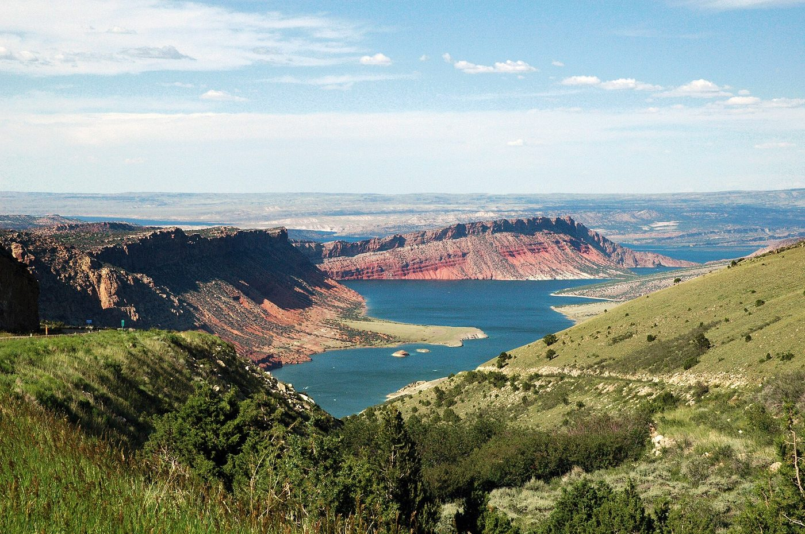
Photo: DimiTalen, CC0, via Wikimedia Commons.
How the seasons differ
| Summer (August 2027) | Late November 2026 | |
|---|---|---|
| Mirror Lake Highway (Utah 150, also called SR-150, short for State Route 150) | Open. In 2026 UDOT, the Utah Department of Transportation, reopened it on 22 May Checked online 28 Oct. | The section from the Soapstone winter gate (east of Kamas) to the Wyoming border closes when lasting snow arrives, typically in November or December Checked online 28 Oct. On 28 October 2026 it was open and UDOT had announced no closing date Checked online 28 Oct. It may or may not be closed on 19–28 November. Check UDOT the morning you go Estimate. |
| Flaming Gorge | Red Canyon Visitor Center is open Memorial Day to Labor Day, daily 9 AM–5 PM Checked online 28 Oct. Dam Visitor Center is open daily 9 AM–5 PM in the 2026 season; guided dam tours are no longer offered Checked online 28 Oct. | Red Canyon Visitor Center is closed for the season; the rim viewpoints stay open all year Checked online 28 Oct. I did not find the dam visitor center's closing date; it reopened 15 April in 2026, so expect it closed in November Estimate. Sheep Creek loop is closed in winter Checked online 28 Oct. |
| Dinosaur National Monument | Open. Quarry Exhibit Hall shuttle runs in summer Checked online 28 Oct. | Quarry Exhibit Hall is open 10 AM–4 PM from 1 December Checked online 28 Oct; November hours were not confirmed. The Cub Creek road (Tour of Tilted Rocks) is usually open all year, but the last 4 miles may be impassable in winter Checked online 28 Oct. Closed Thanksgiving Day Checked online 28 Oct. |
| Weather | Hot in the basin, cool in the mountains, afternoon thunderstorms Estimate. | Cold, with highs often near or below 40°F and some snow in the mountains and basin Estimate. |
Maps of the driving routes
There are four maps. Each one has a table of distances and drive times, and links that open the same leg in OpenStreetMap or Google Maps on your phone. The drive times come from a route calculator that assumes no traffic and no snow, so I label them Estimate. For planning, add 10 to 15 percent, and more in winter. The plan uses these numbers in the day-by-day lists below. Day numbers count from the first day of each trip (summer Day 1 is Monday 9 August; November Day 1 is Thursday 19 November).
Map 1: the whole trip
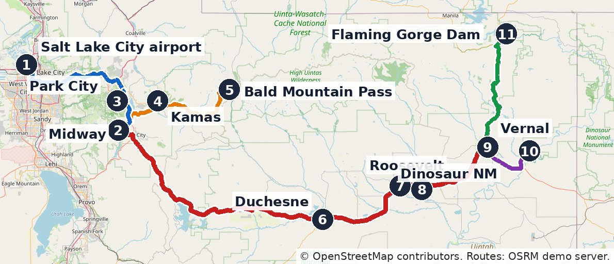
Map: © OpenStreetMap contributors. Route lines were calculated with the public OSRM demo routing server (router.project-osrm.org), which uses OpenStreetMap road data. Tap the map to open the full-size image.
| Leg (one way) | Day (summer / Nov.) | Distance | Drive time Estimate |
|---|---|---|---|
| Salt Lake City airport to Midway Open in: OpenStreetMap · Google Maps | 1 and 10 / 1 and 10 | 55 mi | about 1 hour 10 minutes |
| Midway to Park City Open in: OpenStreetMap · Google Maps | 3 / 2 | 19 mi | about 30 minutes |
| Midway to Bald Mountain Pass, through Kamas, on Utah 150 Open in: OpenStreetMap · Google Maps | 4 / 4 | 47 mi | about 1 hour 10 minutes |
| Midway to Vernal, through Heber, Duchesne, Roosevelt, and Fort Duchesne on US-40 Open in: OpenStreetMap · Google Maps | 5 and 9 / 5 and 9 | 136 mi | about 2 hours 50 minutes |
| Vernal to Quarry Exhibit Hall, Dinosaur National Monument Open in: OpenStreetMap · Google Maps | 7 / 6 | 19 mi | about 30 minutes |
| Vernal to Flaming Gorge Dam, on US-191 Open in: OpenStreetMap · Google Maps | 8 / 7 | 41 mi | about 1 hour |
- Summer (9–18 August 2027): every line on the map is open.
- November (19–28 November 2026): the blue, red, purple, and green lines stay open, but snow can slow US-40 and the mountain passes. The orange line, Mirror Lake Highway (Utah 150), may be closed beyond the Soapstone winter gate east of Kamas Checked online 28 Oct. Check the UDOT (Utah Department of Transportation) seasonal roads page on the morning you drive. The Soapstone gate is not marked on the map because I could not find its exact location.
Map 2: Mirror Lake Highway (Day 4)
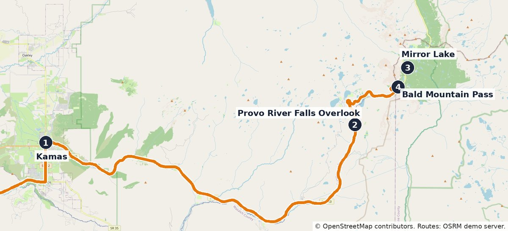
Map: © OpenStreetMap contributors. Route lines were calculated with the public OSRM demo routing server (router.project-osrm.org), which uses OpenStreetMap road data. Tap the map to open the full-size image.
| Leg (one way) | Day (summer / Nov.) | Distance | Drive time Estimate |
|---|---|---|---|
| Midway to Kamas Open in: OpenStreetMap · Google Maps | 4 / 4 | 18 mi | about 30 minutes |
| Kamas to Provo River Falls Overlook Open in: OpenStreetMap · Google Maps | 4 / 4 | 24 mi | about 35 minutes |
| Kamas to Bald Mountain Pass Open in: OpenStreetMap · Google Maps | 4 / 4 | 30 mi | about 40 minutes |
A full Day 4 from Midway is about 94 miles round trip and about 2 hours 20 minutes of driving before stops Estimate. I plan 2.5 hours of driving plus the stops. Summer: open Checked online 28 Oct. November: the road from Kamas to the Soapstone winter gate stays open, but the highway beyond the gate, which includes Mirror Lake and Bald Mountain Pass, may be closed. If it is closed, turn around at the gate. The map shows the summer route.
Map 3: Vernal and Dinosaur National Monument (Day 7 in summer, Day 6 in November)
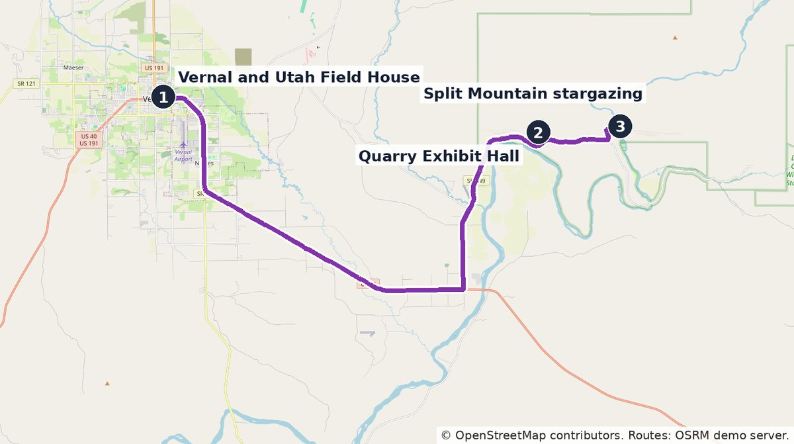
Map: © OpenStreetMap contributors. Route lines were calculated with the public OSRM demo routing server (router.project-osrm.org), which uses OpenStreetMap road data. Tap the map to open the full-size image.
| Leg (one way) | Day (summer / Nov.) | Distance | Drive time Estimate |
|---|---|---|---|
| Vernal to Quarry Exhibit Hall Open in: OpenStreetMap · Google Maps | 7 / 6 | 19 mi | about 30 minutes |
| Vernal to Split Mountain stargazing area Open in: OpenStreetMap · Google Maps | 7 / 6 | 22 mi | about 35 minutes |
The Quarry day is about 38 miles round trip, or about 1 hour of driving, plus the 10-mile Tour of Tilted Rocks. The evening stargazing trip is another 45 miles round trip, about 1 hour 10 minutes. Together that is about 2 hours of driving, or 2.5 hours with the Tilted Rocks drive Estimate. Summer: all open. November: hours are shorter, stargazing programs are not scheduled in winter as far as I could see, and snow can cover the Swelter Shelter path and the gravel end of the Tour of Tilted Rocks.
Map 4: Flaming Gorge (Day 8 in summer, Day 7 in November)
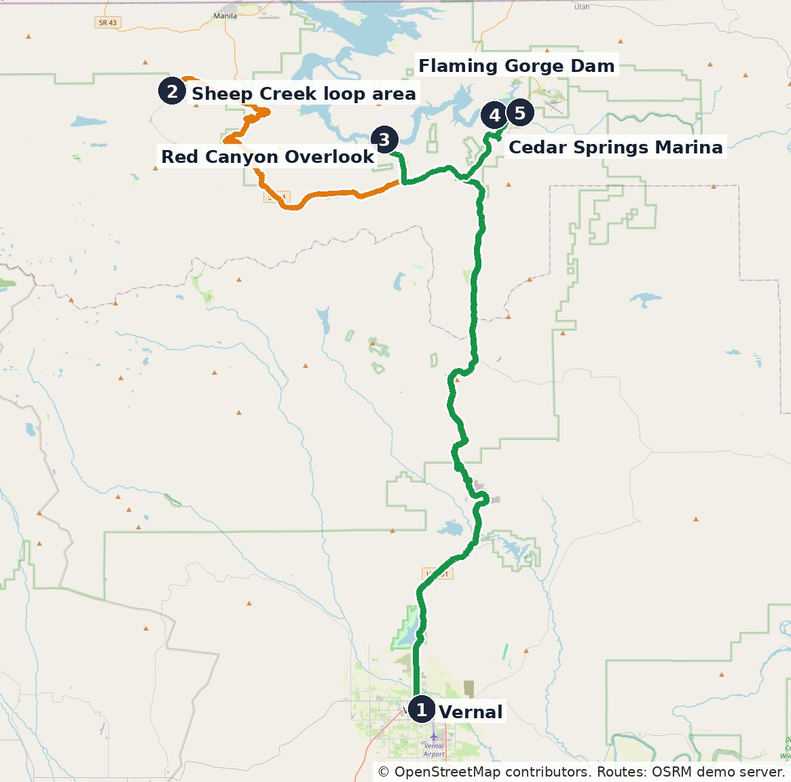
Map: © OpenStreetMap contributors. Route lines were calculated with the public OSRM demo routing server (router.project-osrm.org), which uses OpenStreetMap road data. Tap the map to open the full-size image.
| Leg (one way) | Day (summer / Nov.) | Distance | Drive time Estimate |
|---|---|---|---|
| Vernal to Red Canyon Overlook Open in: OpenStreetMap · Google Maps | 8 / 7 | 41 mi | about 1 hour 5 minutes |
| Red Canyon Overlook to Flaming Gorge Dam Open in: OpenStreetMap · Google Maps | 8 / 7 | 12 mi | about 25 minutes |
| Flaming Gorge Dam to Vernal Open in: OpenStreetMap · Google Maps | 8 / 7 | 41 mi | about 1 hour |
| Vernal to Cedar Springs Marina (boat tours) Open in: OpenStreetMap · Google Maps | 8 / 7 | 40 mi | about 1 hour 5 minutes |
| Option B, summer only: Vernal to the Sheep Creek loop area Open in: OpenStreetMap · Google Maps | 8 / not available | 60 mi | about 1 hour 35 minutes |
| Option B: Sheep Creek loop area to Red Canyon Overlook Open in: OpenStreetMap · Google Maps | 8 / not available | 25 mi | about 45 minutes |
Option A, the overlook and the dam, is about 95 miles round trip and about 2.5 hours of driving Estimate. Option B, which replaces the dam with the Sheep Creek loop, is about 126 miles and about 3.5 hours of driving, plus about 30 to 45 minutes on the loop itself Estimate. Summer: both options are open. November: the Sheep Creek loop is closed in winter Checked online 28 Oct, so do not plan Option B. The Red Canyon Visitor Center is closed for the season, but the rim viewpoints stay open Checked online 28 Oct. The dam visitor center is generally open only from mid-April to mid-October Checked online 28 Oct.
Day by day: summer version (9–18 August 2027)
Driving times are per day. Each day starts after breakfast, with rest in the afternoon.
- Mon 9 Aug. Fly to Salt Lake City (SLC), then Midway. Take a morning nonstop from BWI or IAD. Pick up the rental car. Drive to Midway, 55 miles, about 1 hour 10 minutes Estimate (see Map 1; the 50–65 minutes I found online is for Heber, which is closer than Midway). Check in at Zermatt Resort, use the pool, rest. Driving: about 1 hour 10 minutes.
- Tue 10 Aug. Rest day in Midway. Late breakfast. Soak at The Crater at Homestead (a warm mineral spring inside a rock dome; $30 per one-hour session, water about 96°F, life vest required and provided, book ahead) Checked online 28 Oct. Hotel pool and spa in the afternoon. Driving: about 10 minutes.
- Wed 11 Aug. Park City. Stroll Main Street, which is flat in its main blocks Estimate, with a lunch stop. Midway to Park City is 19 miles, about 30 minutes each way Estimate (Heber to Park City is about 25 minutes Checked online 28 Oct). Return to Midway for rest. Driving: about 1 hour total.
- Thu 12 Aug. Mirror Lake Highway scenic drive. Drive from Kamas on Utah 150. Stops: Provo River Falls (about 0.2 mile out and back from the pullout) Checked online 28 Oct; the Mirror Lake loop (1.5 miles, easy, about 39 feet of climb; allow 30–90 minutes) Checked online 28 Oct, which you can shorten to any length; the Bald Mountain Pass overlook at 10,715 feet Checked online 28 Oct. You can do the entire day from the car and short strolls. Take the high stops slowly because of altitude (see Safety). Fee: a recreation pass is required at fee sites: $10 for 3 days, $20 for 7 days Checked online 28 Oct. Driving: Midway to Bald Mountain Pass and back is 94 miles, about 2 hours 20 minutes without stops; plan about 2.5 hours of driving plus the stops Estimate (see Map 2).
- Fri 13 Aug. Drive to Vernal. Take US-40 through Duchesne, Roosevelt, and Fort Duchesne. It is 136 miles from Midway, about 3 hours with a short break Estimate (the route calculator says 2 hours 50 minutes without stops; see Map 1). This road crosses the Uintah Basin, the area in the UFO section below. Stop in Roosevelt for lunch. Check in at the Dinosaur Inn & Suites or Holiday Inn Express.
- Sat 14 Aug. Utah Field House of Natural History, Vernal. It is a dinosaur museum with a dinosaur garden, $10 for adults ($8 seniors), open 9 AM–7 PM daily in summer according to the 2026 brochure Checked online 28 Oct. The park's website and brochure disagreed on some hours, so call (435) 789-3799 before you go Checked online 28 Oct. It also has a free visitor center Checked online 28 Oct. Optional easy stop: the Uintah County Regional History Center in Vernal, open on weekdays (see the UFO section). Afternoon rest. Optional: the UFO Valley mesa tour (see the UFO section). Driving: under 30 minutes.
- Sun 15 Aug. Dinosaur National Monument. Quarry Exhibit Hall (about 1,500 dinosaur bones in a rock wall; you can touch some real fossils) Checked online 28 Oct. Swelter Shelter petroglyphs, a 400-foot round-trip walk with a few stone steps Checked online 28 Oct. Then the Tour of Tilted Rocks, a 10-mile one-way scenic drive; the first 8 miles are paved, and the last 2 are maintained gravel that is not recommended for low-clearance cars Checked online 28 Oct. The monument entrance is $25 per vehicle Checked online 28 Oct. After dinner and a rest, return after dark to the Split Mountain Campground stargazing area (see the Night sky section). Driving: about 2 hours total including the evening trip, or about 2.5 hours with the Tour of Tilted Rocks Estimate (see Map 3).
- Mon 16 Aug. Flaming Gorge-Uintas National Scenic Byway. Drive US-191 north from Vernal about 35 miles, then Utah 44 to the Red Canyon Overlook; it is 41 miles in total Checked online 28 Oct (see Map 4). Walk the paved overlook paths. Visit the Red Canyon Visitor Center and the dam visitor center. Optional: a scenic boat tour from Cedar Springs Marina (see Do you need a guide). Option A: stop after the dam. Option B: add the Sheep Creek Geological Loop, a 13-mile scenic drive through tilted rock layers, mostly passenger-car friendly in dry weather, 1–2 hours Checked online 28 Oct; skip the dam if you pick B. Driving: about 2.5 hours for Option A (95 miles); about 3.5 hours for Option B (126 miles), plus 30 to 45 minutes on the loop itself Estimate.
- Tue 17 Aug. Drive back to Midway. 133 miles, about 2 hours 45 minutes to 3 hours Estimate. Second Crater soak or hotel spa.
- Wed 18 Aug. Fly home. Midway to the Salt Lake City airport is 55 miles, about 1 hour 10 minutes Estimate. Take a midday or afternoon nonstop to BWI or IAD.
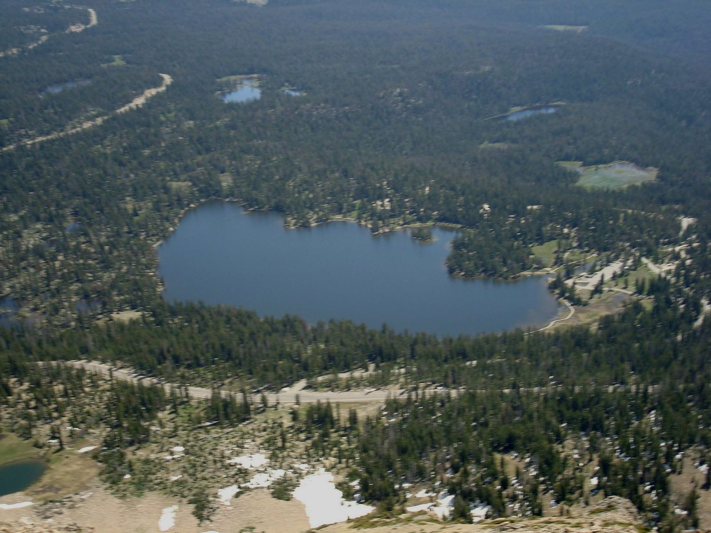
Photo: Glennfcowan, CC BY 3.0, via Wikimedia Commons.
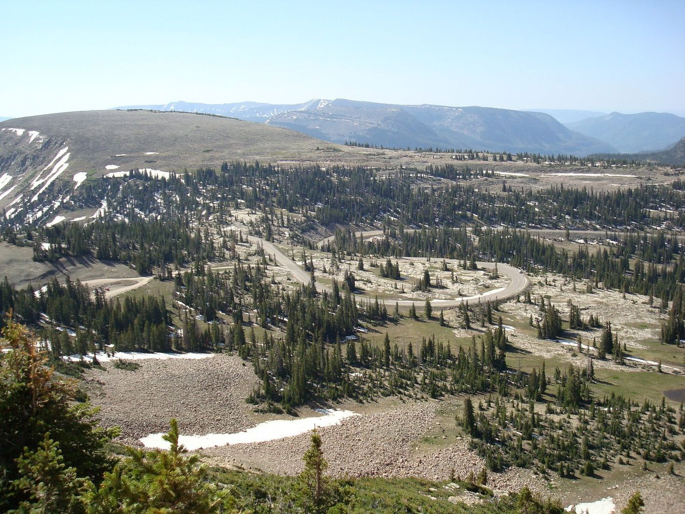
Photo: Glennfcowan, CC BY 3.0, via Wikimedia Commons.
Day by day: November version (19–28 November 2026)
- Thu 19 Nov. Fly to SLC, then Midway. Use an all-wheel-drive rental. Check in at Zermatt. Rest. Driving: about 1 hour 10 minutes.
- Fri 20 Nov. Park City. Main Street, lunch, and shops. Return to Midway. Driving: about 1 hour total.
- Sat 21 Nov. Rest day. Soak at The Crater at Homestead (open year-round, about 96°F water) Checked online 28 Oct. Hotel spa.
- Sun 22 Nov. Lower Mirror Lake Highway. Drive from Kamas toward the Soapstone winter gate; the road from Kamas to the gate stays open Checked online 28 Oct. If UDOT still lists the highway open, you can continue to the lake. If it is closed, take a short walk on flat snow at a plowed pullout and have hot chocolate in Kamas. Do not go past the gate. Driving: about 2–3 hours total Estimate.
- Mon 23 Nov. Drive to Vernal. US-40, 136 miles, about 3 hours Estimate; allow extra for snow. Afternoon visit to the Utah Field House (open Monday to Saturday; closed Sundays October to March) Checked online 28 Oct.
- Tue 24 Nov. Dinosaur National Monument. Quarry Exhibit Hall (check November hours), Swelter Shelter if the 400-foot path is clear of snow Checked online 28 Oct, and the first part of the Tour of Tilted Rocks. Dress warmly for the evening stargazing area (programs are not scheduled in winter as far as I could see) Estimate.
- Wed 25 Nov. Flaming Gorge scenic byway. Drive to the Red Canyon Overlook. The rim viewpoints are open all year; the visitor center is closed Checked online 28 Oct. About 2.5 hours of driving for the overlook and the dam road, 95 miles in all Estimate. The Sheep Creek loop is closed, so skip it.
- Thu 26 Nov. Thanksgiving. Rest day in Vernal. The Field House and Quarry Exhibit Hall are closed on this day Checked online 28 Oct. Ask the hotel now about a holiday meal Estimate. Read about the UFO history (see the UFO section).
- Fri 27 Nov. Drive to Midway. 133 miles, about 2 hours 45 minutes to 3 hours Estimate. Crater soak or spa.
- Sat 28 Nov. Fly home from SLC.
Winter driving: carry water and a full fuel tank, and avoid driving after dark on mountain roads Estimate. Cell coverage ends a few miles above Kamas Checked online 28 Oct.
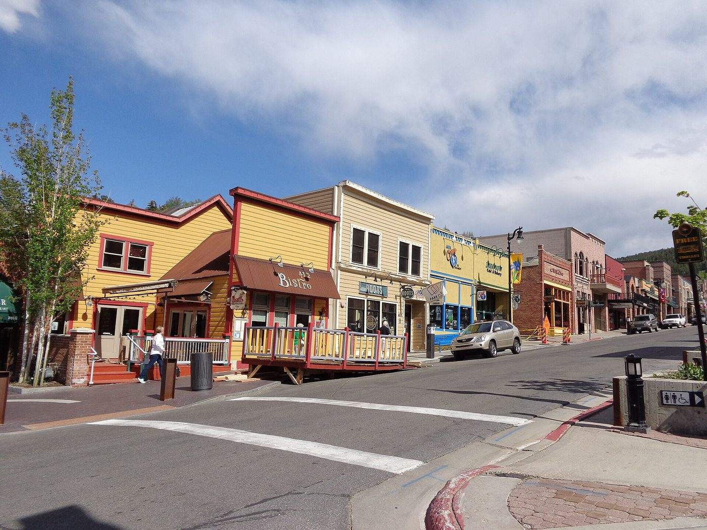
Photo: Saalebaer, CC0, via Wikimedia Commons.
Base towns and drive times
- Midway and Heber: About 1 hour 10 minutes from SLC (55 miles to Midway) Estimate; Heber is closer, at 50–65 minutes Checked online 28 Oct. Comfortable resorts, a hot spring, and a flat valley.
- Park City: 40–55 minutes from SLC Checked online 28 Oct; about 25 minutes from Heber Checked online 28 Oct; about 30 minutes from Midway Estimate.
- Kamas is the start of Mirror Lake Highway, 17 miles and about 30 to 40 minutes from Midway Estimate.
- Vernal: the base for Dinosaur National Monument, the Field House, and Flaming Gorge. It is 173–182 miles and about 3.5 hours from SLC Checked online 28 Oct.
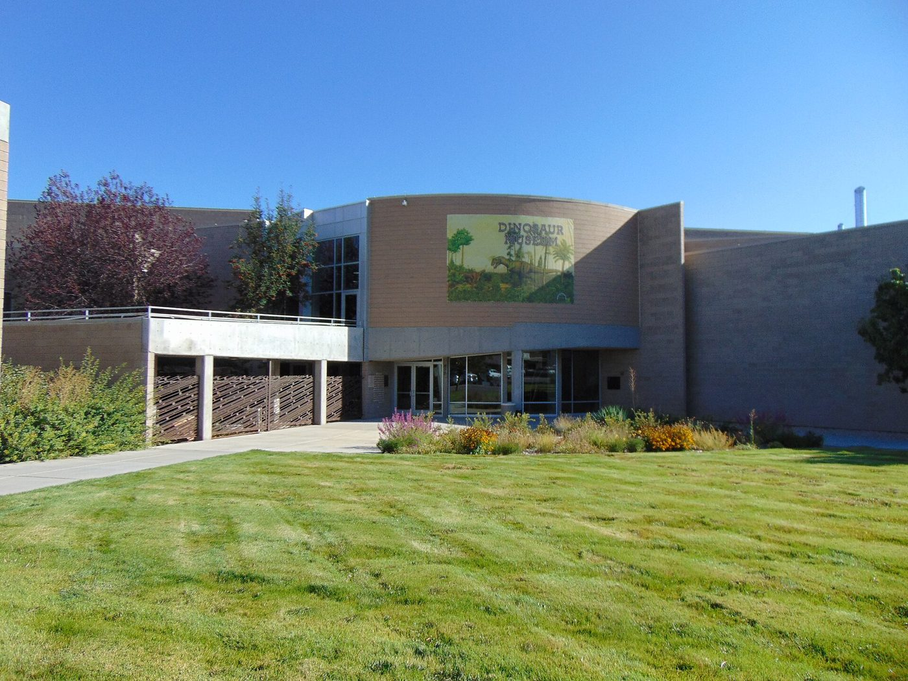
Photo: An Errant Knight, CC BY-SA 4.0, via Wikimedia Commons.
The UFO angle: Professor Frank B. Salisbury and the Uintah Basin
I separated this section into three kinds of statements. Documented facts come from library records, books, or institutional pages. Witness claims are what people said they saw; they are not proven. Speculation is an explanation or opinion that nobody has proved. Each source is named in parentheses with a link, and the Sources section at the end of the page explains what each one is. Spelling note: the basin and county are written "Uintah"; the mountains are written "Uinta".
- Who he was. Frank Boyer Salisbury was born in Provo, Utah, on 3 August 1926 and died in Logan, Utah, on 26 December 2015 Checked online 28 Oct. He earned a Ph.D. at the California Institute of Technology in 1955. He was a plant physiologist. He taught at Colorado State University from 1955 to 1966, then at Utah State University from 1966, where he led the Department of Plant Science from 1966 to 1970. He retired from the department in 1991 Checked online 28 Oct. He also grew wheat in experiments on the Russian space station Mir Checked online 28 Oct; those experiments ran from 1995 to 1997 Not confirmed (I could not find these years in the sources I opened). (Sources: his obituary from Allen Mortuaries; Sign Oral History Project biography of Salisbury; Library of Congress record for Frank B. Salisbury.)
- How he got involved. His UFO interest grew from his interest in life on other planets. He published "Martian Biology" in Science in April 1962 Checked online 28 Oct. In October 1966, after a talk on Mars to the Association of Utah Science Teachers, Joseph Junior Hicks, a junior high science teacher from Roosevelt, Utah, introduced himself and described sightings in Roosevelt and Vernal Checked online 28 Oct (Sources: free sample chapter of the 2010 reissue; Sign Oral History Project biography of Salisbury).
- The book. "The Utah UFO Display: A Biologist's Report" was published in 1974 by Devin-Adair, Old Greenwich, Connecticut, with data from the files of Joseph Junior Hicks and a foreword by J. Allen Hynek. It has 286 pages plus plates Checked online 28 Oct (Sources: East Carolina University library catalog entry for the 1974 book; Internet Archive page for the 1974 book). It was reissued around 2010 by Cedar Fort Checked online 28 Oct; that publisher's page (Cedar Fort publisher page for the 2010 reissue) says "over 400 sightings". That is only the publisher's number. The book's own list of sightings (its Table 1) has 80 sightings Checked online 28 Oct (Source: free sample chapter of the 2010 reissue).
- When he visited. He arrived in the Uintah Basin on 13 June 1968 and began interviewing witnesses Checked online 28 Oct (Sources: free sample chapter of the 2010 reissue; Salisbury's 1975 article in BioScience, copied on the rr0.org website).
- The case file. In his 1975 article (Frank B. Salisbury, "Recent Developments in the Scientific Study of UFO's", BioScience, volume 25, issue 8, pages 505–512, August 1975, DOI 10.2307/1296963; this is a different article from his "The Scientist and the UFO", BioScience, January 1967) he wrote that Hicks's file held 80 cases, and he summarized 7 of them plus 1 reported directly to him Checked online 28 Oct (Source: Salisbury's 1975 article in BioScience, copied on the rr0.org website; I did not see the original journal page).
- The place. The basin is about 75 miles long, 5,000 to 6,000 feet in elevation, a dry high desert, with US-40 running east to west Not confirmed. A map in the book shows sightings clustered around Roosevelt and Fort Duchesne, with others around Vernal and along US-40 Checked online 28 Oct (Source: free sample chapter of the 2010 reissue).
- His papers. Utah State University's Special Collections in Logan holds the Frank Boyer Salisbury papers, including UFO material and 1974 drafts of the book Checked online 28 Oct (Source: Utah State University finding aid for the Frank Boyer Salisbury papers). Logan is far from this trip, so it is not in the plan.
- On 26 September 1966, Kent Denver and friends said they watched a red ball of fire move around on the horizon for about 30 minutes Checked online 28 Oct.
- Thyrena Daniels said a large red glowing sphere followed her car on the roughly 30-mile drive from Vernal to Roosevelt Not confirmed.
- One red glowing object was said to be seen by at least 40 scattered witnesses across the basin, including night-shift workers at a phosphate plant Not confirmed.
- Three brothers named Ercanbrack said they saw a large silver object in a field in daylight and approached it Not confirmed.
- Salisbury's own opinion, from his 1975 article: the cases have "such a high strangeness index that it seems virtually impossible to think of them as misinterpreted natural phenomena or as secret weapons." He also wrote that he could not accept that the witnesses were lying or hallucinating, "although I cannot prove that they were not" Checked online 28 Oct. This is his judgment, not a proven result.
- Salisbury counted 88.75 percent (about 89 percent) of the sightings between summer 1965 and winter 1968 Checked online 28 Oct; the 1978 Callahan and Mankin paper quotes this figure (Callahan and Mankin, "Insects as Unidentified Flying Objects", Applied Optics, 1978 (free PDF)). The busiest period was autumn 1966: 33 of the 80 sightings in his Table 1 were in September, October, and November 1966 Checked online 28 Oct (Source: free sample chapter of the 2010 reissue). Saying the reports "peaked in late 1966 and 1967" is only partly supported.
- Nobody has shown what the lights were. No physical evidence from the 1960s wave is confirmed Estimate. A 1978 scientific paper by Philip S. Callahan and R. W. Mankin of the U.S. Department of Agriculture proposed that some of the lights were swarms of spruce budworm moths glowing in strong electric fields from storms (Applied Optics, volume 17, issue 21, pages 3355–3360, 1978, DOI 10.1364/ao.17.003355) Checked online 28 Oct (Callahan and Mankin, "Insects as Unidentified Flying Objects", Applied Optics, 1978 (free PDF)). That is their proposed explanation, not a proven one.
- Skinwalker Ranch is a different story. It is a private cattle ranch near Ballard and Fort Duchesne. Its UFO claims first became widely known in 1996, through a Deseret News article about the ranch owners, Terry and Gwen Sherman Checked online 28 Oct (Zack Van Eyck, "Frequent Fliers?", Deseret News, 30 June 1996). That is after Salisbury's 1974 book, so do not assume his cases were at the ranch. This is my reading of the dates Estimate. The ranch's claims (strange lights, animals, cattle deaths) are witness claims. One source (Milky Way News) says several funded studies produced no peer-reviewed evidence Checked online 28 Oct.
Further reading
- Zack Van Eyck, "Frequent Fliers?", Deseret News, 30 June 1996: the newspaper article that first made the Skinwalker Ranch claims widely known.
- Callahan and Mankin, "Insects as Unidentified Flying Objects", Applied Optics, 1978 (free PDF): the scientific paper that proposes glowing insects as a cause of some lights, and quotes Salisbury's 88.75 percent figure.
- free sample chapter of the 2010 reissue (a free PDF from an electronic-book seller): Salisbury's own account of meeting Joseph Junior Hicks, and the sighting by Valda and Donna Massey in Vernal on 7 September 1966.
Can you visit Skinwalker Ranch?
No. It is private property. Several independent pages say it is fenced, guarded, and closed to the public, with no public tours Checked online 28 Oct (for example Haunt Bound and Visit Utah). I could not load the ranch's own website on 28 October, so I could not read its statement directly. Do not drive to the gate and do not enter the property. The ranch borders land of the Ute Indian Tribe of the Uintah and Ouray Reservation, so visit the area with respect Checked online 28 Oct.
A UFO-themed route that fits the easy plan
- Before the trip: read Salisbury's book. Look for it at a public library or as a reissue (published about 2010) Checked online 28 Oct; I did not confirm which libraries hold copies Estimate.
- Day 5 in both versions: drive US-40 through Duchesne, Roosevelt, and Fort Duchesne. These are the towns at the center of the 1960s reports. Roosevelt is where Hicks taught. I could not verify any UFO museum, marker, or festival in Roosevelt, Fort Duchesne, Hanna, or the Uintah County library, so I do not list any.
- Vernal: ask at the free visitor center inside the Utah Field House for current local events Checked online 28 Oct. It is a natural history museum and has no verified UFO exhibit.
- Vernal, easy indoor stop: the Uintah County Regional History Center, 152 East 100 North, Vernal, holds local history collections. Its listing says it is open Monday to Friday, 8 AM to 5 PM; the same page also shows 9 AM to 5 PM, so treat the hours as Estimate. It may be closed on Thanksgiving. Call (435) 789-6276 before you go (Uintah County Library website).
- Optional paid tour: UFO Valley Campground & UTV Tours in Fort Duchesne runs a 2-hour guided tour on a 4-mile off-road trail on the mesa with elevated views of the Skinwalker Ranch area, for $180 per person Checked online 28 Oct. It is a rough off-road ride and is not required. See the next section.
The night sky
- Best car-reachable spot: Dinosaur National Monument. It was certified as an International Dark Sky Park on 22 April 2019 Checked online 28 Oct. It can be reached 24 hours a day for stargazing Checked online 28 Oct. The monument has a designated stargazing spot at the back of the Split Mountain Campground, which you can drive to Checked online 28 Oct. From Vernal, the Quarry area is about 20 minutes Checked online 28 Oct; Split Mountain is somewhat farther Estimate.
- Ranger night sky programs run on select nights, usually in summer, for 20–60 minutes, with telescopes when weather and staffing allow Checked online 28 Oct. Check the monument calendar for August 2027 dates. The Quarry Exhibit Hall itself is closed at night Checked online 28 Oct.
- Tips from the park service: let your eyes adjust for 30 minutes, use a red light, avoid the full moon for faint objects Checked online 28 Oct.
- November: the sky is dark, but expect 20–30°F at night Estimate. Bring warm layers.
Do you need a guide?
No. You do not need a guide or a company for this plan. It uses paved roads, short flat walks, museums, and hotels. All viewpoints and walks above are self-guided.
A guide is optional. I list the ones that I confirmed exist on their own websites. I have not booked or contacted any of them. Prices are from their pages on 28 October Checked online 28 Oct unless marked.
1. UFO and night-sky
| Name | What it offers | Price | Official page |
|---|---|---|---|
| UFO Valley Campground & UTV Tours, Fort Duchesne | 2-hour narrated tour on a 4-mile off-road trail on the mesa, with views of the ranches and the "Stone Circle" seen on television. Up to 4 passengers. No filming or drones. Stay within 10 feet of the guide. Closed shoes only. Weather cancellations are decided close to the start time. Phone (435) 828-4717. A bumpy ride, so not ideal for comfort. Checked online 28 Oct | $180 per person Checked online 28 Oct | ufovalleycampground.com |
| Skinwalker Ranch | No public tours. Private property. Checked online 28 Oct (reported by several pages; the ranch's own site did not load) | Not applicable | Not available |
| Dinosaur National Monument ranger night sky programs | Talks and telescope viewing on select nights at the Split Mountain Campground, 20–60 minutes. Checked online 28 Oct | No separate fee; monument entry $25 per vehicle Checked online 28 Oct | nps.gov/dino guided tours |
2. Snowshoe and Nordic tours for the November version
The listed tour seasons start in December, so a 19–28 November trip may be before the season. Call to ask. Without snow, there are no tours. I did not find a verified guided cross-country skiing tour, so I list none. Skiers can ski the groomed Mirror Lake Highway corridor without a guide Checked online 28 Oct.
| Name | What it offers | Price | Official page |
|---|---|---|---|
| Utah Outdoor Adventures, Park City | About 2 hours on snow. Listed as "easy". Snowshoes, poles, guide, and transport to the trailhead included. Checked online 28 Oct | From $90 per person (2-person minimum); private $105 per person or $165 for one person Checked online 28 Oct | utahoutdooradventures.com |
| All Seasons Adventures, Park City | Pace can be "leisurely". Season listed as December to March. Includes pickup. Checked online 28 Oct | $50–$215; local tour $109; Uinta half day $180 Checked online 28 Oct | allseasonsadventures.com |
| Wasatch Adventure Guides | Private snowshoe tours in the Wasatch or Uinta Mountains. Checked online 28 Oct | $119–$139 per person (Wasatch); $225 per person for a Uinta half day Checked online 28 Oct | wasatchadventureguides.com |
Not recommended: a Yellow Pine snowshoe event from Rev3Endurance is listed as intermediate with more than 1,000 feet of elevation change Checked online 28 Oct. That is too strenuous for your preference.
3. Flaming Gorge boats and fishing, and Dinosaur river trips
Boat tours and river trips run mainly in the warm season Estimate. Most do not suit the November version.
| Name | What it offers | Price | Official page |
|---|---|---|---|
| Cedar Springs Marina, near Dutch John | Guided lake tour, up to 4 people. Season not confirmed; call (435) 299-2520. Checked online 28 Oct | $300, $350, or $400 for the boat, before tax and tip Checked online 28 Oct | cedarspringsmarina.com |
| Flaming Gorge Resort (guided fishing) | Seated drift-boat day on the Green River below the dam. A "Half Day Fishing/Scenic" trip is listed, so ask about a no-fishing scenic float. A Utah fishing license is likely needed for fishing Estimate. Checked online 28 Oct | $599 half day; $699 full day, for 1–2 people (April to October 2026 prices) Checked online 28 Oct | flaminggorgeresort.com |
| Trout Creek Flies, Dutch John | Guided drift-boat fishing, year-round. Checked online 28 Oct | $600 half day; $700 full day, for 1–2 people Checked online 28 Oct | troutcreekflies.com |
| Dinosaur River Expeditions, Vernal | One-day Flaming Gorge raft trip rated Class II (gentle rapids). Checked online 28 Oct Ask about comfort and seating. Estimate | $109 per adult, plus tip and booking fee Checked online 28 Oct | dinosaurriverexpeditions.com |
| Adrift Dinosaur and OARS Dinosaur | The National Park Service lists them as authorized one-day river trip operators through Split Mountain Canyon, starting at Rainbow Park. Checked online 28 Oct Rapids are likely stronger than Class II; not an easy option Estimate. | Not checked | nps.gov/dino river trips |
| Dinosaur National Monument rangers | Free talks at the Quarry Exhibit Hall in summer; evening programs at the Green River Campfire Circle on select nights. Checked online 28 Oct | Included with entry | nps.gov/dino guided tours |
Multi-day river trips (about $1,279–$1,499) involve camping, so I left them out Checked online 28 Oct.
My view: none is needed. If you want one extra, the Cedar Springs lake tour is the easiest way to be on Flaming Gorge without driving a boat, and the price is for the whole boat. In November, an easy Park City snowshoe tour is the only guided option worth considering, and only if snow is on the ground.
Flights (cheapest sensible fare, domestic)
These come from public airline and route pages. They are not searches for specific dates. Check your dates on the airline sites.
- BWI to SLC: Southwest and Delta both fly nonstop daily Checked online 28 Oct. Southwest's route page shows fares from $149 one way Checked online 28 Oct. Delta's listed nonstop round trips start around $269–$295 Checked online 28 Oct; Southwest's comparable round trips were about $273–$291 for mid-September dates Checked online 28 Oct.
- IAD to SLC: Nonstop flights exist on United and Delta Estimate; I did not check prices. The flight takes about 4.5 hours Estimate.
- Budget about $300–$450 round trip for a summer nonstop Estimate. Thanksgiving week may cost more: $350–$600 Estimate.
Rental car
- Summer: any car works. The paved route covers every stop. The last 2 miles of the Tour of Tilted Rocks are gravel and not recommended for low-clearance cars Checked online 28 Oct.
- November: rent an all-wheel-drive vehicle Estimate.
- Price: about $50–$90 per day in summer and $60–$100 in November Estimate. No live price was found.
Lodging: comfortable hotels and resorts only
Cabins, camping, and rustic lodging are removed. Prices are from hotel booking pages; they change by date.
| Hotel | Where | Reviews | Approximate price per night |
|---|---|---|---|
| Zermatt Utah Resort & Spa (my main pick) | Midway | 8.0 out of 10 from about 1,000 reviews. Guests praise cleanliness and staff. Some mention a closed restaurant or a room not ready. Checked online 28 Oct | Listings from $120 to about $266; average about $170 on 25 October Checked online 28 Oct. Summer: $250–$450 Estimate. Indoor and outdoor pools, hot tub, spa, restaurant Checked online 28 Oct. |
| Homestead (alternative) | Midway | 8.8 out of 10 from 1,006 reviews on one site; pools and hot tubs praised. A 2026 review mentions construction, new management, and weak dining. Checked online 28 Oct | $192 and up; $215 listed for 2–3 November Checked online 28 Oct. Summer $300–$500 Estimate. The Crater is on the property. |
| Hyatt Place Park City (alternative base) | Park City | 9.0 out of 10 from 1,002 reviews. Breakfast, pool, and hot tub praised. Parking is a common complaint. Checked online 28 Oct | From $125 for 9–10 November ($141 total with fees) Checked online 28 Oct. The Park City accommodations guide lists $89–$599 by season Checked online 28 Oct. |
| Newpark Resort | Park City | Not checked | $129–$999 by season, per the Park City accommodations guide Checked online 28 Oct |
| Dinosaur Inn & Suites (Vernal pick) | Vernal | 4.8 out of 5 from 361 reviews (Tripadvisor); 8.8 out of 10 from 1,524 reviews (KAYAK). Breakfast and pool. Checked online 28 Oct | $107–$132 Checked online 28 Oct. Summer $130–$190 Estimate. |
| Holiday Inn Express & Suites Vernal | Vernal | 8.4 out of 10 from 138 reviews. Indoor pool, hot tub, free breakfast. Checked online 28 Oct | From $132 Checked online 28 Oct |
Left out on purpose: Flaming Gorge Resort rooms (Tripadvisor 3.7 out of 5 with mixed reviews, described as "modern rustic") Checked online 28 Oct, Red Canyon Lodge cabins, Kamas cabins, and all camping.
Cost summary (one traveler, one hotel room)
All totals are my Estimate sums from the ranges on this page. Meals are an estimate. The total changes a lot with the date.
| Item | Summer 9–18 Aug 2027 | November 19–28 2026 |
|---|---|---|
| Round-trip flight | $300–$450 | $350–$600 |
| Rental car, 10 days | $500–$900 | $600–$1,000 |
| Hotels: 5 nights Midway | $1,250–$2,250 | $750–$1,300 |
| Hotels: 4 nights Vernal | $520–$760 | $460–$640 |
| Meals ($60–$120 per day) | $600–$1,200 | $600–$1,200 |
| Fuel | $100–$150 | $100–$150 |
| Admissions (Crater $30 per soak, Field House $10, monument $25 per vehicle, passes) | $100–$150 | $100–$150 |
| Optional: Cedar Springs boat tour (whole boat), UFO tour ($180) | $0–$580 | $0 (not offered) |
| Total | about $3,400–$6,400 | about $3,000–$5,100 |
Permits and fees
- Mirror Lake Highway fee sites: a recreation pass is required: $10 for 3 days, $20 for 7 days, $60 for a season. Driving the road is free Checked online 28 Oct.
- Dinosaur National Monument: $25 per vehicle, valid for 7 days Checked online 28 Oct.
- Flaming Gorge: no entrance fee. A day-use pass ($5 per day) is needed at fee-area recreation sites; driving the Sheep Creek loop itself is free Checked online 28 Oct.
- Utah Field House: $10 adults, $8 seniors Checked online 28 Oct.
- The Crater at Homestead: $30 per one-hour session; book ahead; it closes for renovations in April and May 2027 Checked online 28 Oct.
Safety
- Altitude: Mirror Lake Highway reaches 10,715 feet at Bald Mountain Pass Checked online 28 Oct. Mirror Lake is about 10,000 feet Estimate. With an easy plan the risk is lower, but some people feel headache, nausea, or dizziness above 8,000 feet. Do the mountain day on day 4 after three low-elevation days, walk slowly, drink water, and go down the road if you feel unwell. Red Canyon Overlook is 7,417 feet Checked online 28 Oct. Vernal is about 5,300 feet Estimate.
- Heat (summer): basin temperatures can pass 90°F in August Estimate. Walk early, carry water.
- Storms: summer afternoon thunderstorms happen in the mountains Estimate. Leave the lakeshore if you hear thunder.
- Winter driving: check UDOT conditions each morning. Carry water and fuel. Mountain roads are not plowed past the winter gate, and there is no help or cell coverage there Checked online 28 Oct. Avoid night driving on mountain roads Estimate.
- Petroglyphs: do not touch them; skin oils damage them Checked online 28 Oct.
- Hot-spring soak: keep sessions short, drink water, and ask a doctor first if you have a heart condition Checked online 28 Oct.
Carry-on packing list (no mountaineering gear)
- Layers: T-shirts, a fleece, a light jacket, a rain shell.
- Comfortable walking shoes (wear them on the plane); wool socks.
- Sun hat, sunglasses, sunscreen, a refillable water bottle.
- A swimsuit for hotel pools and the Crater; a light towel.
- Small binoculars for viewing petroglyphs from a distance and for stargazing; a red-light flashlight or headlamp.
- November additions: warm coat, hat, gloves, waterproof walking shoes, hand warmers.
- Photo ID, medicines, and a small daypack. Liquids over 3.4 ounces and knives do not go in a carry-on.
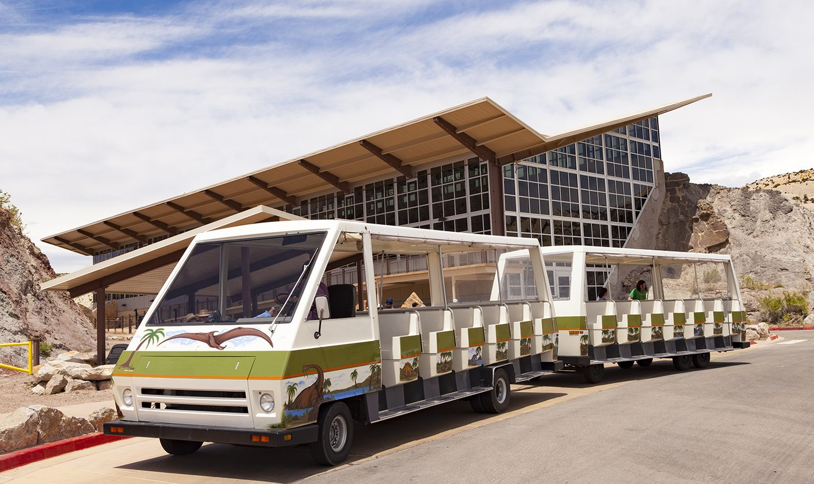
Photo: Ricardo630, CC BY-SA 4.0, via Wikimedia Commons.
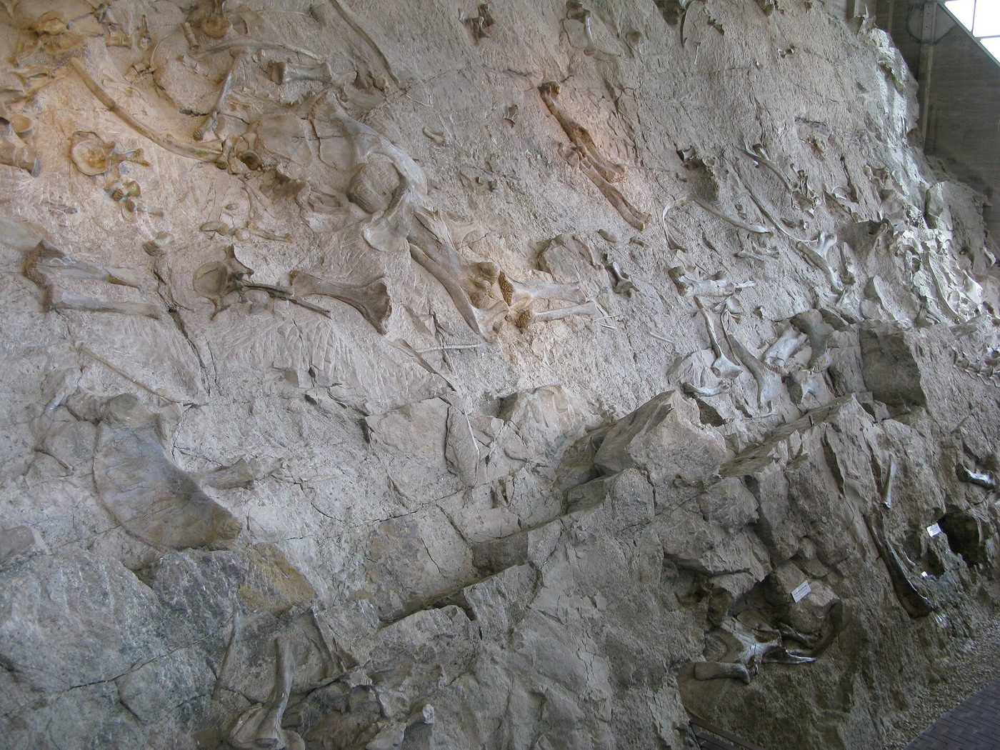
Photo: Drake411, CC BY-SA 3.0, via Wikimedia Commons.
Sources
Every source below is a link. Each entry says what the source is and what I used it for. Some terms in short: UDOT is the Utah Department of Transportation, which runs the state's roads and posts which mountain roads are closed. NPS is the National Park Service, the federal agency that runs Dinosaur National Monument. USU is Utah State University. OSRM is the Open Source Routing Machine, a free road-route calculator. A finding aid is a library's list of what is in an archive collection. A free sample is the first part of a book that the seller gives away. OpenStreetMap is a free map made by volunteers.
Frank Salisbury and the 1960s UFO reports
- Sign Oral History Project (sohp.us), an archive of recorded interviews with scientists, including a short biography of Salisbury: used for his birth year, education, jobs, and the Mir space station wheat project.
- Library of Congress name record (id.loc.gov), the U.S. national library's official record for an author: used to confirm his full name, his birth year, and the schools where he worked.
- East Carolina University library catalog (librarycatalog.ecu.edu), a university library's catalog card for the 1974 book: used for the publisher, the page count, Joseph Junior Hicks's data, and J. Allen Hynek's foreword.
- Internet Archive page for the 1974 book (archive.org), a free digital library: used to confirm the book's title and publication details. I did not read the book itself there.
- Free sample chapter of the 2010 reissue (ebooks2go.com), a PDF from an electronic-book seller: used for Salisbury's own account of how Hicks introduced himself in October 1966, his arrival on 13 June 1968, and the map of sightings.
- Salisbury's 1975 article in BioScience, copied on the rr0.org website (rr0.org), a French website that archives UFO research: used for the 80-case file, the 7 summarized cases, and his opinion quotes. The journal's own record is at doi.org/10.2307/1296963. I did not see the original journal pages.
- Utah State University finding aid for the Frank Boyer Salisbury papers (archiveswest.orbiscascade.org), a regional archive catalog: used to learn that Utah State University in Logan holds his papers, including UFO material.
- Cedar Fort publisher page for the 2010 reissue (cedarfort.com), the publisher's sales page: used for the 2010 reissue and its claim of "over 400 sightings". That number is the publisher's claim, not a checked count.
- Obituary of Frank Boyer Salisbury (allenmortuaries.net), published by the funeral home: used for his birth and death dates and places, his 1991 retirement, and his Mir wheat work.
- Callahan and Mankin, "Insects as Unidentified Flying Objects", Applied Optics, 1978 (free PDF) (ars.usda.gov), a paper in a physics journal, hosted by the U.S. Department of Agriculture: used for the insect explanation and the 88.75 percent figure.
- Umbralog article on the Uintah Basin UFO wave (umbralog.com), a website that retells UFO stories: first pointed me to the insect explanation and the 89 percent figure, which I then checked in the 1978 paper.
Skinwalker Ranch
- Zack Van Eyck, "Frequent Fliers?", Deseret News, 30 June 1996 (deseret.com), a Salt Lake City newspaper: used for when the ranch's claims first became widely known.
The pages below are secondary pages: they report what other people said, and none of them is a scientific source. The ranch's own website did not load for me on 28 October.
- Visit Utah, "The Unknown and Otherworldly Near Vernal" (visitutah.com), the state tourism website: used for the statement that the ranch is private and closed to the public, and for the UFO Valley mesa tour.
- Legends of America (legendsofamerica.com), a history and folklore website: used for the ranch's size and ownership history.
- Haunt Bound (hauntbound.com), a haunted-places guide: used for the statement that the property is fenced, guarded, and not open to visitors.
- Milky Way News (milkywaynews.com), a news website with a guide to the subject: used for the note that studies found no peer-reviewed evidence.
- The UFO Chronicles article on the ranch (theufochronicles.com), a UFO news blog: used for background on the ranch's later history.
- UFO Valley Campground and UTV Tours (ufovalleycampground.com), a tour company near Fort Duchesne: used for the 2-hour mesa tour and its $180 price.
Roads, parks, and places to visit
- UDOT seasonal roads page (udottraffic.utah.gov): used for whether Mirror Lake Highway (Utah 150) is open and where the Soapstone winter gate is. The page shows the status for October 2026 only, so check it again before you go.
- U.S. Forest Service page for the Mirror Lake Scenic Byway (fs.usda.gov): used for the stops along Mirror Lake Highway and the recreation pass prices ($10 for 3 days, $20 for 7 days).
- National Park Service pages for Dinosaur National Monument (nps.gov): entrance fees, scenic drives (the Tour of Tilted Rocks), the Swelter Shelter petroglyph walk, stargazing, and guided tours. Used for the $25 vehicle fee, the 10-mile drive, the 400-foot walk, the night-sky viewing area, and which tours are offered.
- Utah State Parks page for the Utah Field House of Natural History (stateparks.utah.gov): used for its address, its admission prices, and its days open. The park's website and its brochure disagreed on some hours, so call before you go.
- U.S. Bureau of Reclamation news release (usbr.gov), the federal agency that runs Flaming Gorge Dam: used for the dam visitor center's season and hours. U.S. Forest Service page for the Red Canyon Visitor Center (fs.usda.gov): used for that visitor center's summer-only schedule.
- Visit Utah page on Flaming Gorge scenic drives and Daggett County scenic drives page (visitutah.com; daggettcounty.gov): used for the Flaming Gorge-Uintas National Scenic Byway route and its winter notes.
- Utah Geological Survey page on the Sheep Creek Canyon Geological Area (geology.utah.gov), the state's geology agency: used for the Sheep Creek loop and for the fact that it is closed in winter.
- Uintah County Library website (library.uintah.gov): used for the Uintah County Regional History Center's address, phone, and hours.
- The Crater at Homestead (homesteadmidwayutah.com), the resort's own page for the warm spring: used for the $30 one-hour soak and the booking advice.
Lodging, flights, and tours
- Zermatt Resort (zermattresort.com): the resort's own site, used for its location and facilities.
- Park City Accommodations Guide 2026–27 (visitparkcity.com), a lodging list from the Park City tourism office: used to see which hotels exist in Park City.
- Hotel price pages on HotelsCombined, Hotels.com, KAYAK, and trivago (hotel price-comparison websites): used for typical room prices. The links go to each site's home page. Prices are not for your exact dates.
- Flight pages on Southwest Airlines, Google Flights, Expedia, and KAYAK (an airline and flight-search websites): used for which nonstop flights exist and typical fares. The links go to each site's home page. Fares are not for your exact dates.
- Tour companies: each one is linked where it appears in the "Do you need a guide?" section.
Photos and maps
- Wikimedia Commons (commons.wikimedia.org), a free image library: the source of all seven photos. The author and license are under each photo.
- OpenStreetMap (openstreetmap.org): the map pictures use its map tiles, © OpenStreetMap contributors, under the Open Database License.
- OSRM, the Open Source Routing Machine (project-osrm.org): its free demo server calculated the route lines, distances, and drive times on the maps.